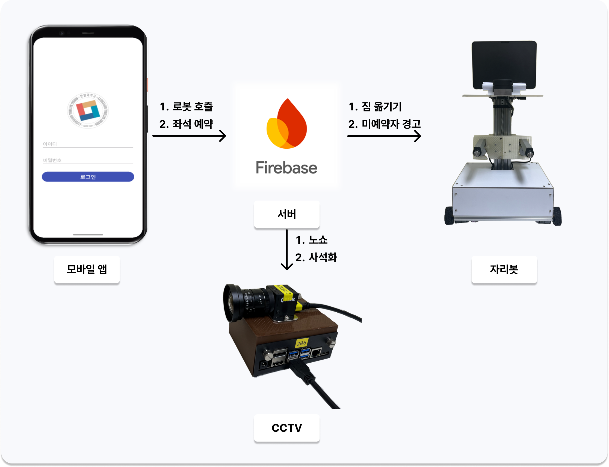
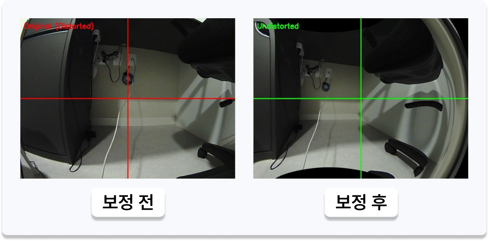
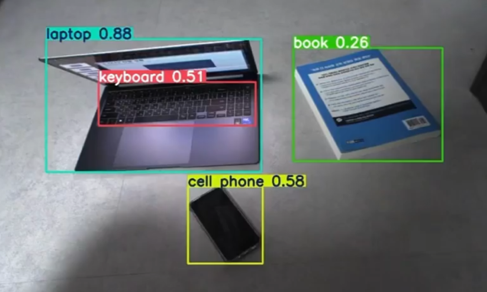
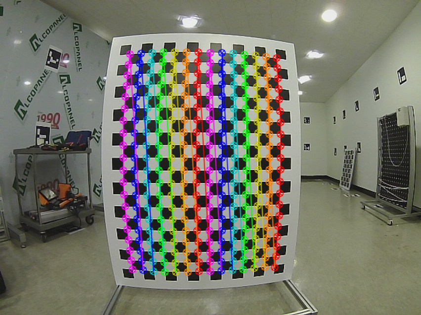
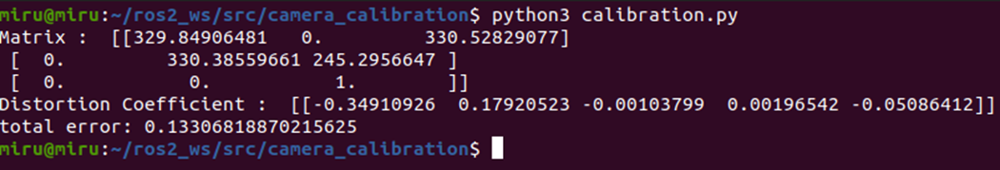
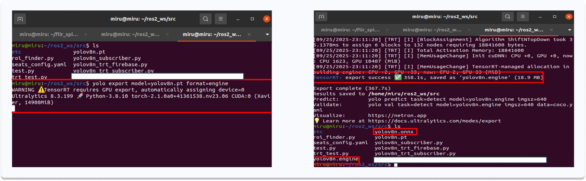
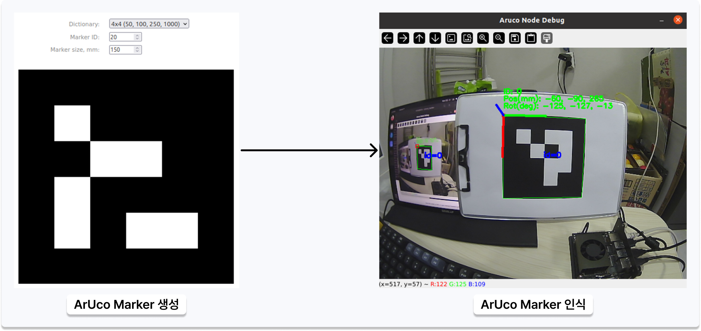

자리봇 - AI 기반 좌석 예약 남용 방지 시스템
도서관 및 카페의 사석화 문제를 해결하기 위한 AIoT 솔루션. CCTV 기반 실시간 객체 탐지, 자율이동 로봇, 모바일 앱을 연동하여 예약 남용과 무단 사용을 자동으로 감지하고 대응한다.
Overview
도서관·카페에서 자리를 맡아두는 사석화 문제를 AIoT 기술로 해결하는 시스템이다. 모바일 앱으로 좌석을 예약하면 Firebase DB가 실시간으로 업데이트되고, 천장에 설치된 CCTV가 YOLOv8 모델로 좌석 점유 여부를 감지한다. 자율이동 로봇(자리봇)이 노쇼·무단 사용 상황에 출동하여 경고 메시지를 전달하거나 짐을 수거한다.
1학기(2025.03.08~2025.06.14)에 주제 선정 및 시스템 설계, 2학기(2025.06.15~2025.12.02)에 작품 구현을 완료하였으며, 2025학년도 DSC 공유대학 리빙랩 캡스톤디자인 우수성과 경진대회 모빌리티 소재부품장비 부문 장려상을 수상하고 대한전자공학회 학술심포지엄에 논문을 발표하였다.
Demo
좌석 예약부터 CCTV 실시간 감지, 자리봇의 노쇼/사석화 대응까지 전체 동작 과정을 담은 시연 영상이다.
System Architecture
- 사용자 예약 및 호출 - 모바일 앱으로 좌석 예약 시 Firebase DB 상태 실시간 업데이트, 예약 정보는 즉시 현장 로봇과 CCTV 시스템에 동기화
- 실시간 감지 (CCTV) - 천장 CCTV가 YOLOv8 모델로 실제 점유 여부 판단, 상태 분류: 사람 착석 / 짐만 있음 / 비어있음
- 로봇 대응 및 알림 - 노쇼 감지(예약 후 10분 내 미착석 시 알림·자동 해제), 무단 사용 대응(로봇 이동·경고 메시지·예약 유도), 짐 수거(포크암으로 물품 수거 후 보관소 이동)

Approach
Vision AI System (CCTV)
- 체커보드 패턴을 다양한 각도에서 20장 촬영해 카메라 매트릭스·왜곡 계수를 산출하는 OpenCV 기반 카메라 캘리브레이션으로 광각 렌즈의 방사형 왜곡을 보정하고 좌표 인식 정확도 확보
- YOLOv8n 모델로 사람·책·가방 등 도서관 주요 객체를 실시간 탐지하고 착석·짐만 있음·비어있음 상태를 분류
- NVIDIA TensorRT로 FP16 Precision을 적용해 모델을 경량화하고, Jetson 엣지 디바이스에서의 추론 속도(FPS)와 메모리 대역폭 효율을 최적화





Autonomous Robot System
- 천장에 부착된 ArUco Marker를 인식하고 SolvePnP 알고리즘으로 카메라-마커 간 상대 좌표(X, Y, Z)를 계산하여 로봇의 절대 좌표 및 자세(Rotation)를 실시간 추정
- 자체 제작한 아크릴 프레임에 리니어 액추에이터 기반 포크암을 장착해 사석화된 짐을 들어올려 보관소로 이동시키는 짐 수거 매커니즘 설계
- 도서관의 좁은 통로 환경을 고려해 양쪽 모터를 반대 방향으로 동시 구동하는 Pivot Turn 방식을 적용, 제자리 회전으로 회전 반경과 주행 오차를 최소화
- 2D LiDAR 센서로 주행 경로상의 장애물(사람, 의자 등)을 실시간 감지하여 회피 또는 정지

Tech Stack
Team
국립한밭대학교 전자공학과 (총 5명)
Results & Insights
- 2025학년도 DSC 공유대학 리빙랩 캡스톤디자인 우수성과 경진대회 모빌리티 소재부품장비 부문 장려상 수상
- 대한전자공학회 학술심포지엄 논문 발표
- Jetson 보드에서 TensorRT 도입으로 추론 속도(FPS) 향상 - 정확도와의 Trade-off를 타겟 클래스 위주 파인튜닝 및 QAT로 보완
- 모터 간 성능 편차로 정밀 주행이 어려웠던 문제 - 한쪽 바퀴만 멈추던 초기 방식에서 양쪽 모터를 반대 방향으로 동시 구동하는 Pivot Turn 방식으로 전환해 좁은 공간 기동성 확보 및 회전 오차 감소
- 비용 여유가 있다면 라이다 기반 SLAM 도입으로 더 안정적인 자율 주행 동작을 수행할 수 있을 것으로 판단